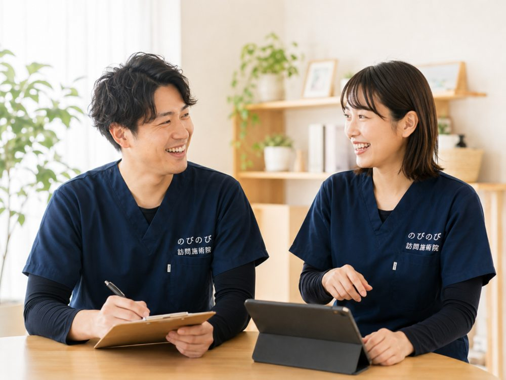

首や肩が重く、腕から手先にかけてしびれが続く。年齢を重ねるとこうした不調は珍しくなく、通院そのものが体にこたえる時期もあります。大阪市北区にお住まいで、外出がむずかしいなかどう付き合えばよいか迷っているご本人やご家族に向けて、この記事をまとめました。しびれの原因を見きわめるのは医師の役割ですが、こわばった首肩をやわらげる手伝いは在宅でも受けられます。まずは仕組みと注意点を整理します。
この記事のポイント
首肩のこりや腕のしびれには、頸椎まわりの変化や神経のかかわりなど、いくつかの背景があります。急に片腕がしびれて力が入らない、ろれつが回りにくいといったときは、施術より先に医療機関や救急へ向かってください。原因の見きわめは医師が先で、鍼灸はこわばりを和らげ血のめぐりを助ける補助の役割です。通院がむずかしい場合は医師の同意により保険を使え、1回3,950円、1割負担の方でおよそ395円が目安になります。
大阪市北区で、首や肩のこり・腕のしびれと向き合う
天満や南森町、扇町、中崎町あたりのお宅から、「夕方になると首から肩甲骨にかけて石のように重い」「気づくと腕から手指にしびれが走る」というお声をよく伺います。年齢を重ねると、家で座って過ごす時間が長くなり、首や肩に同じ負担がかかり続けます。そのうえ通院そのものが体にこたえるようになると、手当ての機会まで遠のいてしまう。のびのび訪問施術院は、そうした首肩のこりや腕のしびれに、ご自宅までお伺いして向き合う訪問鍼灸マッサージ院です。
天神橋筋六丁目や中津のあたりはオートロックのマンションも多く、外に出るまでがひと仕事という方もよくいらっしゃいます。こりやしびれは我慢が続くほど姿勢のクセと結びついて長引きやすいものです。まずは症状の背景を一緒に整理するところから始めます。首・肩のこりや腕のしびれについては「首・肩のこり、腕のしびれ」でも詳しく触れています。
療養費の対象として定められた6つの病名のうち「頸肩腕症候群」にあたる状態については「首・肩・腕のしびれや痛みが続く方へ｜頸肩腕症候群と訪問鍼灸マッサージ」でくわしく説明しています。同じ姿勢が続くと、なぜ首肩から腕へ広がるのか
長時間、同じ姿勢で座って過ごすと、頭の重さを支える首から肩にかけての筋肉が休みなく緊張し続けます。猫背や巻き肩の姿勢では肩が前へ入り込み、首の後ろから肩甲骨まわりが常に引っ張られた状態に。これが積み重なると、こりが一か所にとどまらず、首から肩甲骨、そして腕や手指のしびれへと広がっていくことがあります。医療の分野ではこうした状態を頸肩腕症候群と呼ぶことがあります。
首肩のこりは、頭痛や目の疲れ、ふとした拍子の寝違え、腕を上げにくい可動域の低下ともつながりやすいものです。大淀や豊崎、長柄、国分寺、本庄といった北区の住宅エリアでも、「肩が回しづらい」「腕が重だるい」といったご相談をいただきます。同じ姿勢が続く暮らしのなかで、身体のどこに負担がかかっているのかを見立てることが、はじめの一歩になります。
強いしびれや脱力があるときは、まず受診を
ここで一つ、大切なお願いです。腕や手のしびれが日に日に強くなる、力が入らず物を落としてしまう、しびれとともに激しい痛みや麻痺を感じる、といった場合は、筋肉のこりだけでは説明できない神経の症状が隠れていることがあります。こうしたときは、まず整形外科や神経内科などの医療機関を受診してください。
梅田・南森町の周辺には専門の医療機関も揃っています。適切な検査を受けたうえで、日々のこりやこわばりのケアとして訪問施術をご利用いただくのが安心です。私たちも、気になる症状があるときは受診をおすすめすることをためらいません。
鍼灸・マッサージでできること、できないこと
訪問での鍼灸やマッサージは、緊張し続けた首や肩、肩甲骨まわりの筋肉をゆるめ、血のめぐりをうながしながら、こわばった身体が少し楽になるお手伝いをするものです。医療保険を使ったはり・きゅうの対象となるのは、神経痛・リウマチ・頸肩腕症候群・五十肩・腰痛症・頸椎捻挫後遺症という6つの疾病で、首肩のこりや腕のしびれは頸肩腕症候群の枠で該当しうる症状です。
ただし、施術は病気そのものを治すものではありません。効き方には個人差があり、一度で劇的に変わるというより、続けるなかで身体の状態を整えていくものとお考えください。断定的なお約束はできませんが、「肩が少し軽い」「夜眠りやすくなった」という変化を丁寧に積み重ねていくことを大切にしています。
料金・保険と、北区での対応エリア
医療保険（療養費）を使う場合は、医師の同意書が必要です。要介護認定は不要で、介護保険の限度額とは別枠のため併用もできます。料金は1回の総額が3,950円で、自己負担は1割の方で約395円が目安です。週2回のご利用なら1割負担で月およそ3,160円。関節の動きを保つ機能訓練も含み、エリア内なら出張費はかからず料金は一律です。これらに追加の料金はかかりません。なお、同一部位の医療保険リハビリと鍼灸は、同じ月に同時には算定できません。詳しくは「料金はいくら？医療保険の自己負担額と仕組み」をご覧ください。
天満・南森町・扇町・中崎町から大淀・豊崎・長柄・本庄まで、北区の広い範囲にお伺いしています。オートロックのマンションでも段取りよくお伺いできますのでご安心ください。対応範囲は「対応エリアはどこまで来てもらえる？」で、北区での取り組み全般は大阪市北区の訪問鍼灸マッサージでご案内しています。首肩のこりや腕のしびれが気になり始めたら、どうぞ気軽にご相談ください。
よくある質問
北区のどのあたりまで来てもらえますか？
天神橋筋六丁目、中崎町、天満、南森町、大淀、豊崎、中津など、大阪市北区を広くうかがっています。マンションや施設にも訪問しています。詳しい地域はお問い合わせの際にご確認ください。
首肩のこりや腕のしびれは鍼灸で治りますか？
こりやしびれの大もとや、頸椎の変形・神経の圧迫そのものを元に戻すことはできません。鍼灸は固くなった筋肉の緊張を和らげ、動かしやすさを支える補助です。感じ方には個人差があります。しびれが強い場合は医師にご相談ください。
腕のしびれでも保険で受けられますか？
医師が鍼やお灸を必要と認め、通院がむずかしい状態であれば、首から腕にかけての神経痛は保険の対象になります。まずは今の様子をお聞かせください。
どんなときは施術より先に病院へ行くべきですか？
急に片腕がしびれて力が入らない、ろれつが回りにくい、激しい頭痛やめまいがあるといったときは、施術より先に医療機関や救急へ向かってください。しびれが急に強まる、歩きにくいといった場合も早めの受診をおすすめします。
要介護認定を受けていなくても利用できますか？
はい。要介護認定がなくても、医師が鍼やお灸を必要と認め、通院がむずかしい状態であれば利用できます。介護保険の限度額とは別枠なので、他のサービスと組み合わせても枠とは別に受けられます。
マンションや施設でも来てもらえますか？
はい、マンションやビル、施設にもうかがっています。エントランスの入り方など必要な点は事前にご相談ください。担当のケアマネジャーがいる場合は連携して進めます。
費用は毎回その場で支払うのですか？
お支払いは月ごとにまとめてお願いしています。内訳はあとからでも確認できます。別途の出張費はかからず、エリア内はどこでも同額です。
本人以外が相談してもよいですか？
はい。ご家族や施設の方、ケアマネジャーからのご相談でも構いません。相談だけのご連絡でも大丈夫です。首肩のこりやしびれの様子、通院の状況を教えていただければ、利用できるかを一緒に確かめられます。